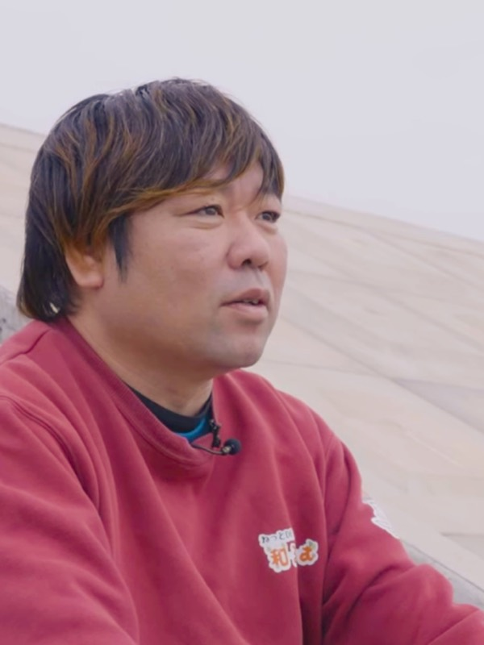
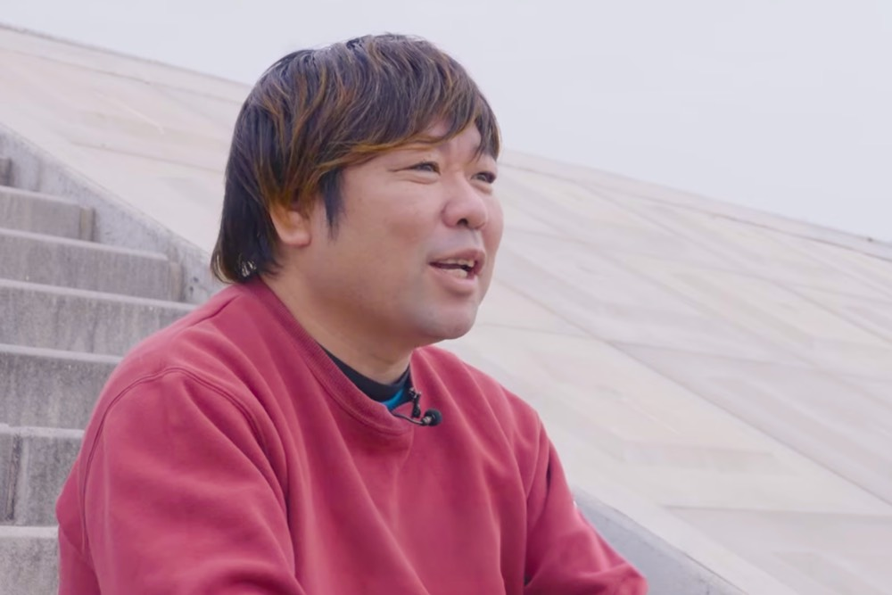
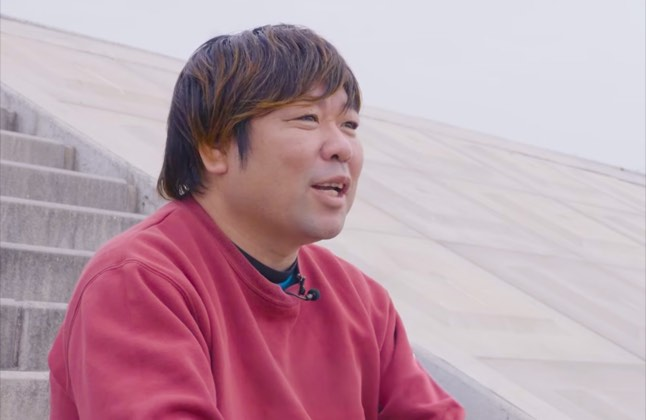
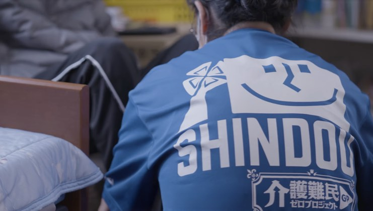
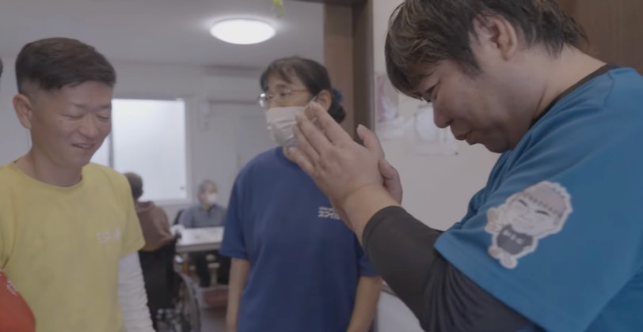
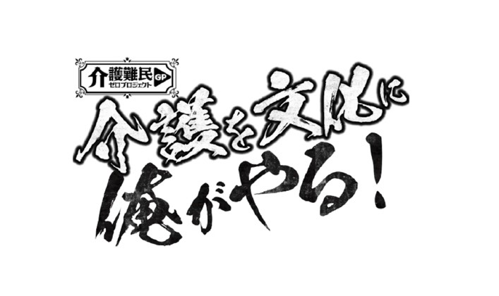
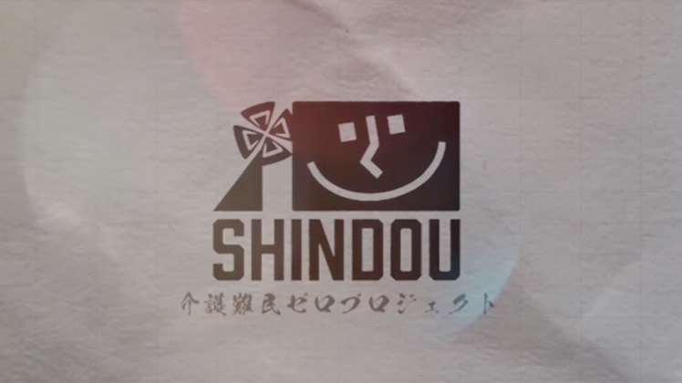
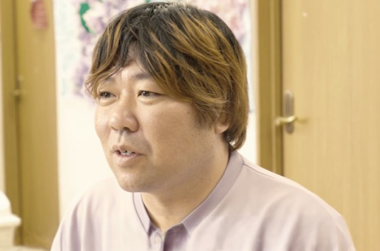
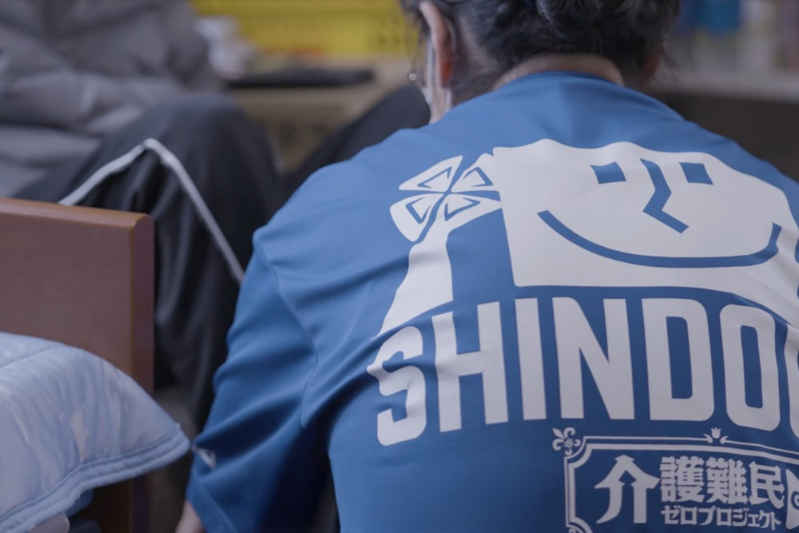

岡山から介護難民をゼロへ!心動の挑戦
岡本大dai okamoto
株式会社心動 代表取締役社長
高校卒業後、専門学校を経て介護業界へ。キャリア26年。実父の介護難民経験をきっかけに、身寄りや資金のない高齢者をアパートのオーナーと連携して受け入れる独自のデイサービスを開始。「介護難民ゼロプロジェクト」を発足し、介護文化の変革へ挑む。
企業サイトを見るCHAPTER 01
実父の経験から始まった「介護難民」救済への原点

Qどのようなきっかけで現在の事業を始められたのでしょうか?
A今から約10年前、私の実父が末期ガンで要介護状態になった時の経験がすべての原点です。当時は介護保険が未取得の段階でお金もコネもなく受け入れてくれる施設がどこにもありませんでした。本当に困り果てた経験から、「自分と同じように親のケアで行き場をなくし、困っている人は岡山にどれくらいいるのだろう」と考えました。実際に調べてみると、想像以上に多くの「介護難民」が存在することを知りました。施設に入れない人々を何とかして救い上げたいという強い思いが起業への引き金となったのです。若い頃は「男が30代を過ぎて続ける仕事ではない」という古いイメージを業界に持っていましたが、がむしゃらに目の前の命と向き合い続け、気づけば26年もの歳月をこの世界で突っ走ってきました。
Q空きアパートを活用した独自のビジネスモデルはどのようにして生まれたのですか?
A自分で街を歩いてみて現在のデイサービス店舗の近辺に空きアパートが非常に多いことに気がつきました。そこでオーナーさんに直接会いに行き「ここに身寄りのないお年寄りを入居させてもらえませんか?私たちが責任を持ってすべての生活の面倒を見ますから」と直談判したのです。オーナーさんにとって孤独死や緊急連絡先がないことが最大の懸念でしたが、「私たちが毎日デイサービスで外出機会を与え、在宅時もすべての生活をお世話する」と伝えることで、多くのオーナーさんが賛同してくれました。高齢の単身者は通常の入居審査で落とされがちですが、オーナーさんと直接関係を築くことで、住まいとケアを同時に提供する画期的な仕組みを確立できました。
CHAPTER 02
行き場のない人々に寄り添う強みと覚悟
Q御社の事業における具体的な特徴や、他社にはないこだわりについて教えてください。
A何らかの理由で既存の施設に入れない人々を近所のアパートに迎え、外出機会を与える介護保険事業のデイサービスを提供することです。さらに在宅の方向けには、介護保険外の事業として部屋の掃除や食事の用意、生活のサポートなども行っています。私たちの強みであり譲れないこだわりは「本当にお金がない人や身内がいない」といった社会のセーフティーネットからこぼれ落ちてしまった人々を何とかして救い上げることです。普通に施設に入れる人はそこに入ればいい。しかし、どうしても入れない人々を施設に入っている人と同じように温かく手厚い環境でお世話してあげたいというのが最初の強い思いです。高齢者だけでなく、若くして末期ガンを患う2号介護保険の方なども広く受け入れています。
Qそのような介護を必要としている方々「介護難民」と、どのような経緯でつながるケースが多いのでしょうか?
A実は病院からの紹介が一番多いです。日々の食べるものもなく相談する術すら分からない方々が、体調を崩してようやく病院に駆け込みます。 shadow入院治療を経て、「退院してください」と言われたものの、その後の行き先が全くないというタイミングで私たちに声がかかります。また、地域包括支援センターからの紹介も非常に多いです。現代は相談できる身内もいない単身者が増えており、生活がままならない状態に陥っています。彼らに対して、アパートのオーナーさんとウィンウィンの関係を築きながら、私たちが生活のすべてを支える仕組みは、アパートの空き室問題を解決しつつ、地域の深刻な課題である孤独死を未然に防ぐための極めて有効な手段になっています。






CHAPTER 03
イメージの刷新と新しい介護文化への挑戦

Q現在注力されている「介護難民ゼロプロジェクト」の5つの柱について詳しく教えてください。
Aこのプロジェクトは、閉鎖的な介護業界の壁を打ち破り、ポジティブなイメージを世の中に発信していくための挑戦です。具体的な柱は5つあります。1つ目は、若い介護職のメンバーがSNS(TikTokやYouTube、Instagramのショート動画など)を駆使して介護の魅力を広げ、仲間を増やす活動。2つ目は、職場のリアルな雰囲気を動画で見せる求人支援。3つ目は、自宅がない高齢者への迅速な住まい提供支援(現在、岡山市北区のみ)。4つ目は、介護で困ったときに、行政よりも圧倒的に早く動くサポートの様子を動画で届けること。そして5つ目は、介護事業者向けに格安で分かりやすいホームページを制作することです。これらを一つのポータルサイトとして集約し、「介護文化は俺が創る」という強い覚悟のもとで展開しています。
Qこれからの介護業界をどのように変えていきたいか、今後の展望をお聞かせください。
A私が本気で目指しているのは介護のイメージを「新3K」、すなわち「かっこいい、クリエイティブ、高級(高給)」へと根本から変えることです。高齢者が一番困っているのは、嬉しかったことや悲しかったことを「伝えたい相手がいない」ということです。私たちはその思いを受け止める存在でありたい。世間のマスコミは虐待などのネガティブなニュースばかりを取り上げますが、介護の現場には素晴らしい感動が溢れています。そのポジティブな部分を発信していけば「介護ってこんなに素晴らしいんだ、自分もやってみよう!」と若い世代が集まってくるはずです。将来的にはオムツ交換や食事、お風呂の介助技術を爽やかに競い合う「介護職フェス」のようなイベントも仕掛け、業界全体のステータスを高めていきたいです。